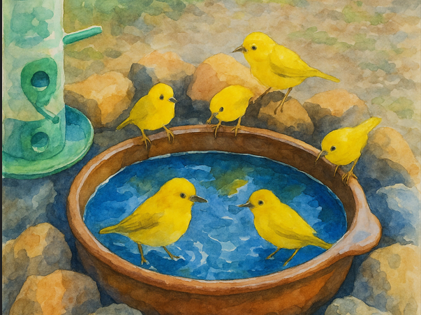

The Bird Bath @ 865

These are some of the birds that visit my Bird Bath.
Note: The "View Bird @ Site" videos are captured at site, not the display images on this page.
The quality of the bird videos is sub-par since they were captured using a CCTV camera pointed to the bird bath.

White-browed Bulbul
Pycnonotus luteolus
Genus:
Pycnonotus
Species:
P. luteolus

Cinereous Tit
Lophophanes dichrous
Genus:
Lophophanes
Species:
L. dichrous

Indian White-eye
Zosterops palpebrosus
Genus:
Zosterops
Species:
Z. palpebrosus

Tickell's Blue Flycatcher
Cyornis tickelliae
Genus:
Cyornis
Species:
C. tickelliae

Jerdon's Leafbird
Chloropsis jerdoni
Genus:
Chloropsis
Species:
C. jerdoni

Oriental Magpie-Robin
Copsychus saularis
Genus:
Copsychus
Species:
C. saularis

Red-vented Bulbul
Pycnonotus cafer
Genus:
Pycnonotus
Species:
P. cafer

Red-whiskered Bulbul
Pycnonotus jocosus
Genus:
Pycnonotus
Species:
P. jocosus

Tawny-bellied Babbler
Dumetia hyperythra
Genus:
Dumetia
Species:
D. hyperythra

Scaly-breasted Munia
Lonchura punctulata
Genus:
Lonchura
Species:
L. punctulata

Indian Jungle Crow
Corvus culminatus
Genus:
Corvus
Species:
C. culminatus

White Bellied Blue Flycatcher
Cyornis pallidipes
Genus:
Cyornis
Species:
C. pallidipes

Greater Coucal
Centropus sinensis
Genus:
Centropus
Species:
C. sinensis

Asian Koel - Female
Eudynamys scolopaceus
Genus:
Eudynamys
Species:
E. scolopaceus

Indian Robin - Female
Eudynamys scolopaceus
Genus:
Copsychus
Species:
C. fulicatus